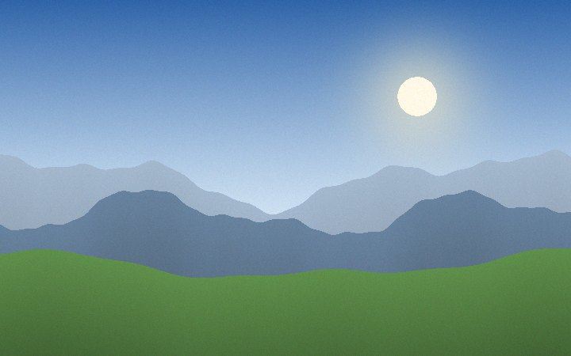
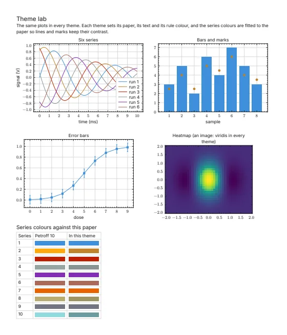
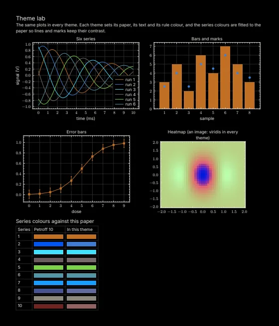
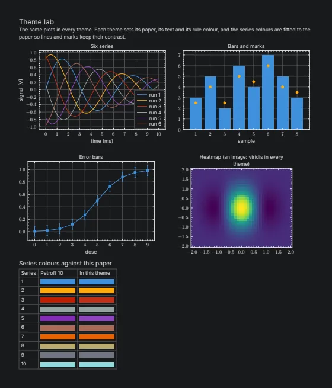
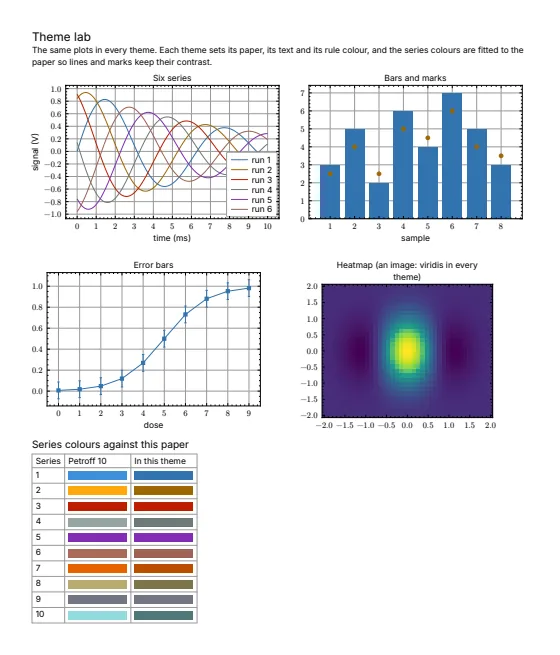
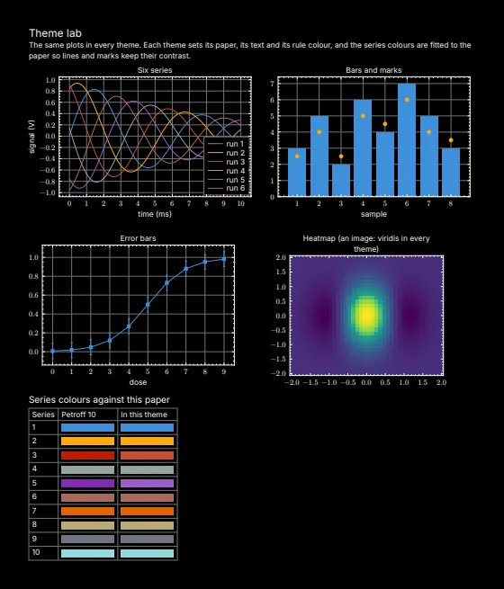
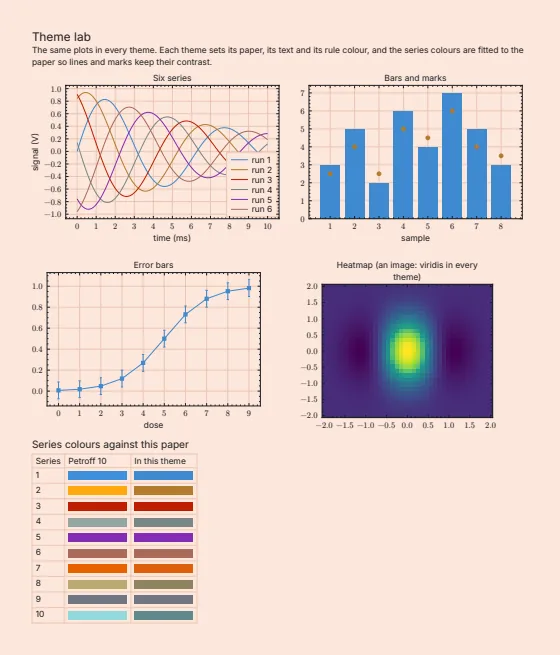
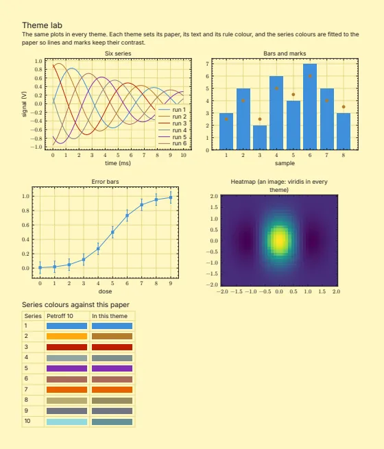
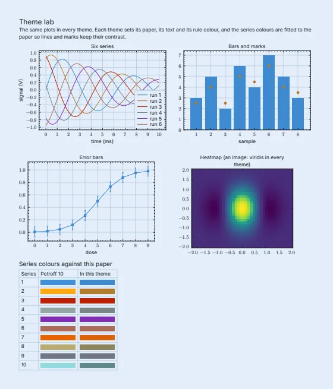

Why themes
One PDF, in colours each reader can choose
People need and prefer different colours. Among people with low vision, many prefer light text on a dark page, and some read faster that way. On average, people with typical sight proofread better with dark text on light. Some people with dyslexia or visual stress prefer a tinted page, and dyslexia guidance suggests cream or a soft pastel rather than white.
Web pages and apps can follow a reader's light, dark or more contrast setting. A PDF has one set of colours, and it says which colour to paint but not what the colour means. So a PDF app that offers a dark mode has to guess. Depending on the app, it inverts every colour, inverts only lightness, or swaps in colours of its own. A plain inversion turns a chart's blue line orange, so a caption that names "the blue line" points at the wrong one, and it turns a photo into a negative.
A theme is a complete set of colours for a document, such as Dark or Cream. pdf-themes puts the author's own themes inside the PDF and checks the contrast of each one's text, so a PDF app wouldn't have to guess. It is a working prototype for a proposal to the PDF Association, not a standard, and not yet a released package you can install. Today only the viewer on this site can switch themes; any other PDF app shows a themed file in its default colours. Nobody with low vision, dyslexia or visual stress has tried the themes yet.
Try it on a chart and a picture
Change "Page colours" at the top of this page, and the chart below follows in the author's colours for each theme. The buttons "Inverted by a PDF app" and "Recoloured by a PDF app" imitate what some PDF apps do instead: a PDF today has only one set of colours, so the app changes them itself.

The author's version for these page colours. Its text and lines are checked for contrast against this page, the lines also under three simulations of colour blindness. The grid is kept faint on purpose, except in the more contrast themes, and the picture is left as it was.
Who it's for
No single set of colours suits everyone
People with low vision
Many prefer light text on dark. In an online survey of 133 adults with low vision, 46% preferred white text on black, 39% black on white and 14% had no preference (Wu et al. 2020). That is what they said, not how they read. The volunteers were younger than most people with low vision, and few had macular degeneration, its commonest cause; five of the six who did preferred black on white.
Light text on dark helps some people with low vision read, more often those whose eyes scatter light, as with a cataract. A white page gives such an eye more light to scatter (Rubin and Legge 1989; Legge 2016). One study of children and teenagers found no clinical test that predicted who (Loh et al. 2025, from its abstract), and one test with cataract found only a slight gain, from 99.1 to 102.7 words a minute (Elliott et al. 2001).
Younger and older readers of charts
When 104 people answered questions about charts in light and in dark, which of the two they used made no measurable difference on average. Their preferences split by age. Of the 52 under 60, 24 preferred dark and 14 light; of the 52 aged 60 or over, 23 preferred light and 6 dark. The rest had no preference or weren't sure (While and Sarvghad 2024).
People with dyslexia or visual stress
Visual stress is discomfort when reading, such as eye strain or headaches. One review puts it at about one in five people with dyslexia (Evans and Allen 2016). In one large study of screen backgrounds, 341 adults (89 with dyslexia or at risk of it) read faster on peach, orange and yellow than on blue, blue grey and green, with or without dyslexia (Rello and Bigham 2017). No white page was tested, so it can't say a tint beats white, and the authors say this doesn't necessarily mean warm colours are recommended. An eye-tracking study of 92 people found no effect of colour (Rello and Baeza-Yates 2017). The British Dyslexia Association's style guide suggests dark text on a light, not white, background, such as cream or a soft pastel (BDA 2023).
Colour doesn't treat dyslexia, and two systematic reviews of coloured overlays, one by authors who work with one tinting system, disagree on whether they help (Griffiths et al. 2016; Evans and Allen 2016). So tints are offered for comfort and choice. The tints on this site are the project's own, paler than the colours tested, and its "turquoise" is a pale blue, near the cool colours that read slowest in the 341-person study. Which tints to offer is still open.
People with typical sight
On average, people with typical sight proofread better and see fine detail better with dark text on light, most of all when the text is small (Piepenbrock et al. 2013, 2014). An earlier study from the same lab found that the advantage comes from the brighter screen, not from the text being dark, though it used low-contrast text in a dark room (Buchner, Mayr and Brandt 2009). In a near-dark room, light text on dark took longer to read at a glance; in bright light it didn't (Dobres et al. 2017). So light stays the default, and dark is a choice.
People with colour vision deficiency (colour blindness)
By the usual estimate, about 8% of men and 0.5% of women have it, though the share varies with ancestry (Crameri et al. 2020). Map readers with red-green deficiency were as accurate as others when the colours were chosen with them in mind, though still slower, and they overwhelmingly preferred those maps (Olson and Brewer 1997, known only from its abstract). Themes don't fix this, and there is no theme for colour blindness. A figure's colours have to be chosen for it, in every theme, as the section on charts and figures below explains.
The colours people choose
In a survey of 204 UK adults with ADHD, autism, or dyslexia, dyscalculia or dyspraxia, background colour was the only setting on which the groups' favourites were reported to differ, though the test behind that looks doubtful, and no colour was chosen by a majority (Otermans et al. 2026). These were stated preferences; reading wasn't measured.
In another study, 107 people with a visual impairment read through magnifiers lit by warm, neutral or cool light. No light was best for the group, and each was preferred by about as many people. On average they read better under the light they preferred than under the one they liked least. This study is known only from its abstract, which doesn't say whether people chose before or after reading, and it changed the colour of a lamp, not of a page (Wolffsohn et al. 2012).
Some of these studies are small, and none of them used themed PDFs. Taken together, they show that preferences differ, and that some people read better in other colours, as some people with low vision do with light text on dark. Whether each person has one colour that suits them best is less clear. The evidence page has every study, with its numbers and how strong it is.
The problem
A PDF app can't tell what a colour is for
A PDF app can tell text from a picture, but not whether a blue line is a data series, a highlight or a brand colour, nor whether a picture is a photo or a diagram. So PDF apps that offer a dark mode treat colours by rule: some invert every colour, some invert only lightness, and some swap in colours of their own. A rule like that is fine for black text on white. On anything designed in colour, it can change what the colours mean.
PDF apps that recolour pages like this include Evince's night mode, Skim's lightness inversion, pdf.js (the PDF viewer in Firefox) in forced colours mode (a high-contrast setting) and Acrobat's Replace Document Colors. The list comes from a search I made on 9 October 2026, and I haven't yet shown it in screenshots.

The author's light theme
Inverted by a PDF app (simulated)
The author's dark theme, from the same file
- Colours that carry meaning change. A plain inversion turns blue to orange and orange to blue, so text that names a colour, such as a caption that says "the blue line", points at the wrong line. A key is inverted with its lines, so it still matches them. Inverting only lightness keeps hues, but still swaps the light and dark ends of a colour scale.
- Photos become negatives, as the demo's picture does when you press "Inverted by a PDF app", and anything the author drew on a dark background turns light.
- Some people with low vision already use colour inversion, and it doesn't always work on charts. In interviews with 11 legally blind adults who read charts with their remaining sight, the results of inversion differed from one person's set-up to the next. One participant's bar chart didn't invert as he expected and came across in very light grey, and one chart, once a participant's filter had inverted it, still didn't meet the Web Content Accessibility Guidelines (WCAG) (Wang, Zhao and Kim 2024). In another study, of 22 adults with low vision, the chart aids being tested mostly worked with people's own tools. Where they didn't, colour filters and themes were the most common reason: a high-contrast theme overrode the aids' colours, and under an inversion filter an effect meant to darken the surroundings brightened them (Sechayk et al. 2026).
- To be fair to inverting, in one small study 12 people with typical sight showed no measurable difference in accuracy or speed between inverted charts and the originals. But they rated the inverted colours far less like the originals than a designed dark version (1.4 against 4.4 out of 7), and inverted charts met WCAG's contrast minimum for graphics more often than the originals (78% against 67%) (Karunathilaka et al. 2025). So the main loss is what the colours mean.
- An author who wants a proper dark version today can make two files, and readers then have to find the right one. Or the author can put two layers in one file, but only some PDF apps can switch layers, and the text and drawings are stored twice. In my tests, two layers made a page of plots 41% bigger, though a simpler test page only 2.7%.
The request isn't new. On the PDF Association's public tracker for PDF specifications, a request for dark mode in PDF has been open since November 2023. Replies there say it bears on accessibility across a range of visual disabilities, and that dark modes today are often simple colour inversion. I posted pdf-themes there in October 2026 (the request and its replies).
The idea
Put the author's themes in the file, and let the reader pick
Made by the author
The author picks each theme's colours once, by role: text, lines, chart series and highlights. From that one source, the author's tools build the document once per theme, and pdf-themes merges the builds into one PDF. In Typst, a typesetting system like LaTeX, that is a single command.
Stored once
The text and drawings are stored once. Each colour on the page gets a number, as in painting by numbers, and a theme is a short list saying which colour each number gets. With all eight themes, a page of plots grew 4.3%, from 38,318 to 39,966 bytes. The proposal, about 0.75 MB, grew about 0.1% with seven extra themes, since most of its size is pictures that every theme shares. Pictures that change between themes cost more: on a test document built to be hard, its light and dark themes added 38%, against 43% for the same two as layers (see what I measured).
Checked
Before a theme goes in, the tool measures each piece of its text against the background behind it. Contrast is given as a ratio, from 1:1 for white on white to 21:1 for black on white. WCAG asks for at least 4.5:1 for ordinary text and 3:1 for large text. At its highest level it asks for 7:1 and 4.5:1, which the more contrast themes use. A theme the author made that falls short is still written, without the mark in the file that says it passed, and the author gets a list of the text that fell short. A theme the tool works out is left out if any text still falls short after its fixes. One with no text to measure, such as a scan, is kept without the mark.
The check has two known faults, found on 24 October 2026 and not yet fixed. It takes text size from the font size as written, so small text in a figure drawn at half size can be held to the large-text minimum of 3:1 instead of 4.5:1. And where text crosses two backgrounds, it is measured against the one it stands out from best. Lines and shapes below 3:1 are listed for the author but don't decide the mark.
Apps that don't know about themes show the default colours
A PDF app that doesn't know about themes shows the default colours, as before. In a test of 298 public PDFs given themes by the development version of 17 October 2026, 297 drew as before in PDFium, the engine in Chrome, at 72 dpi: 266 identically and 31 within one colour level out of 255. Why those 31 differ isn't yet known. One file differed, through how PDFium draws one uncommon kind of colour (Display P3), and the tool refused one more, whose pages use a font missing from the file. In an earlier sweep, MuPDF, another engine, drew pictures in 17 files differently, through a quirk in how it shrinks pictures stored as a palette of colours. Acrobat, Apple Preview and pdf.js weren't checked across the set, and no file had more than 40 pages (see what I measured).
Picking a theme changes no bytes in the file, so the tags that screen readers use stay as they are, and a digital signature made after the themes went in covers every theme. Adding themes rewrites a file, so it has to happen before the file is signed. A theme could hide text by painting it in the paper colour, so the proposal asks signature checkers to draw every theme and say which is shown.
Photos left alone
Photos stay as the author made them. Giving each picture its own recoloured copy for every theme was tried on 18 October and dropped: files grew up to ten times, a scanned book from 25 MB to 179 MB, and scanned pages were themed too. One book's off-white paper turned dark green. When the tool works themes out for a finished file, simple drawings on white with few colours, and grey scans of pages, still take each theme's colours. On a grey scan the dark themes turn the whole page light on dark, a photo on it included. A theme whose text can't be read over a picture is left out. A picture of a chart, such as a PNG, follows the theme only if the author supplies a version for each theme; otherwise it stays a white box on a dark page.
Many PDFs already fall short
In 114 of the 298 public PDFs, some text was below the WCAG contrast minimum in the author's own colours, as the tool measures it. Another 41 had no text to measure. A theme the tool works out is held to the minimum anyway, so faint text is lifted rather than copied. In one paper, grey legend labels at 2.9:1 reached 7:1 in "Light, more contrast" (see what I measured).
A fallback for old files
A PDF whose source files are lost can still be given themes. The tool works them out from the file's own colours, mostly by turning light surfaces dark and dark text light while keeping hues, much as some PDF apps do. Like them, it can't tell what a colour means. With the development version of 17 October 2026, which isn't on GitHub yet, 180 of 298 public PDFs kept all eight themes, 13 of them only because they had no text to check. Of the other 118, 57 kept seven, 34 kept only their own colours and 27 kept between two and six. By kind of file, all eight were kept in 27 of 27 printed web pages, 11 of 15 files made with Typst, 61 of 82 made with LaTeX, 62 of 99 reports, 8 of 15 test files, 6 of 30 slide decks and 5 of 30 scans. Compared with each original saved the same way, files grew by a median of 0.1%, but 32 grew by more than a quarter. That bears out putting themes made by the author first (see what I measured).
- Light
- Dark

Light, more contrast
Dark, more contrast- Cream

Peach
Yellow
Turquoise
Charts and figures
A theme changes only colours, so the figure has to be made right
Some of what makes a chart readable has to be settled when it is made, because a theme can't change it afterwards.
- Every line or group needs a second cue besides its colour: a marker, a dash pattern or a label on the line. When a crowded display was shown for about a tenth of a second, people picked out a group far more accurately when it differed in both colour and shape than in either alone. They were right 13 to 21 percentage points more often (Nothelfer et al. 2017). WCAG asks that colour isn't the only way information is given (WCAG 1.4.1). As the demo shows, a second cue also survives a PDF app's recolouring.
- The colours have to stay distinct for people with colour vision deficiency, in every theme. When 1,500 figures from papers about visualisation were each shown through four simulations of colour vision deficiency, most raters judged about 60% of the 6,000 simulated images accessible, a third borderline or undecided and 7% not (Angerbauer et al. 2022). People with colour vision deficiency also rated colour as less helpful than others did, on real charts picked as likely to confuse red and green, and 9 of 12 colour-blind people interviewed disputed the simulations (Jiang, Arunkumar and Bryan 2026). There is no theme for colour blindness: a figure's colours have to be chosen for it, in every theme.
- Colour scales should change steadily in lightness, as viridis and cividis do, rather than run through a rainbow. Medical students found 91% of the problem regions in 2D images of heart arteries with a two-colour scale suited to the task, and 62% with a rainbow scale; in 3D views it was 71% and 39% (Borkin et al. 2011). Cividis was designed with a simulation of colour vision deficiency (Nuñez et al. 2018), and viridis was tested with people of typical colour vision (Liu and Heer 2018). I found no study that tested either with colour-blind readers.
- A colour scale shows data, so it keeps its colours in every theme, with a frame where its darkest colours meet a dark page. On maps with no key, 214 people took darker as more in 95 to 97% of answers on a light page, and in 87 to 94% with the same colours on a dark page. A tool's dark-mode version kept the order but left its darkest colours nearly matching the background, and then only about half of the answers took darker as more, with a third unsure (Schiewe 2024). Another study found that people read colour scales faster when darker meant more, on white and on black, though on a dark background, scales that look like one colour fading into the background were read faster when lighter meant more (Schloss et al. 2019).
- Text has to be big enough once printed. UK clear print guidance, from the UK Association for Accessible Formats and the RNIB, asks for at least 12 pt, ideally 14 pt, with labels ideally the same size as the body text, and large print starts at 16 pt (UKAAF 2012 and 2024; RNIB 2023). Figure labels can end up smaller than that, because figures are shrunk to fit the page. I found no study of label size in charts. In one study of map labels on a screen, young students' eye movements suggested they searched most efficiently at the middle of three sizes (Brychtová and Çöltekin 2016, from its abstract and the authors' summary). In a study of older adults using interactive charts online, some found some of the text too small (Fan et al. 2023).
A theme could change line widths too. All 11 people with low vision in one study commented on the grid lines and tick marks in charts, mainly about how thin and pale they were and how few (Wang, Zhao and Kim 2024). Thicker lines make colour differences easier to see, at least for typical vision (Szafir 2018). A PDF can keep a line's width and dash pattern in a set of drawing settings that the page refers to, and a theme can swap that set. In a test, when a theme swapped it, three engines, PDFium (Chrome's engine), MuPDF and Poppler, drew a line 3 pt wide instead of 0.5 pt, and did the same for a dash pattern. But most tools that make PDFs write line widths into the page content itself, where a theme can't reach them, and I found no study of whether heavier lines help people with low vision read charts. So the proposal keeps themes to colour and lists line width as an open question. On a web page it is easy: the demo above draws heavier lines and grid in the more contrast themes.
Figures can carry their themes from the start. A figure saved as SVG, a drawing format that web browsers show, can hold its dark and more contrast colours as a few lines of style, and a web browser shows the ones that match its light, dark and contrast settings. Browsers have no setting for a tint, so the tints aren't carried. My PhD thesis's vector figures are made this way now: 103 of them when I counted on 23 October 2026. The printed thesis is unchanged, because Typst, which builds it, ignores those lines when it makes a PDF, so the thesis PDF doesn't carry themes yet. One catch: a figure that follows the viewer's setting can turn dark inside a page that stays light, as it does in Typst's own SVG export and in the Tinymist editor's preview. The thesis's 13 photographs and schematic images can't carry the style lines at all (see what I measured).
How you can help
People to try it, a study, software and a standard
- If you read PDFs: please open the viewer, pick the theme you would use and say what works and what doesn't. The viewer opens only the documents on this site, not your own PDFs. Nobody with low vision, dyslexia or visual stress has tried these themes yet. The issue tracker is public and needs a free GitHub account, so please don't share anything about your health there. Saying which theme you picked, and what was easy or hard to read in it, helps without that.
- If you run accessibility at a university or a publisher: I found no study of whether people with low vision read charts better in the author's themes than with inversion. That study, comparing accuracy and time as well as preference, needs a university to lead it.
- If you make a PDF app: the swap is small. In the viewer on this site the swap itself is about ten lines of JavaScript, which you can read under "The code that swaps the theme". The viewer then saves the swapped copy and draws it with pdf.js. A PDF app would do the swap inside its own engine.
- If you make tools that write PDFs or figures: the tool needs to write each theme's colours. Typst documents can have them now, through pdf-themes. LaTeX, word processors and plotting libraries would need to do the same.
- If you work on standards: the proposal is written for the PDF Association's working group, and it is the first document in the viewer. The draft specification is SPEC.md on GitHub. The themes sit under a temporary name in the file until the Association agrees one.